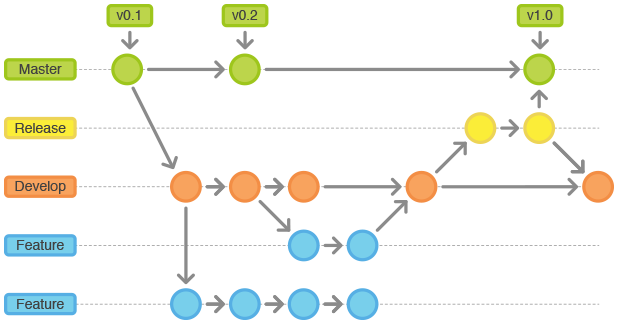
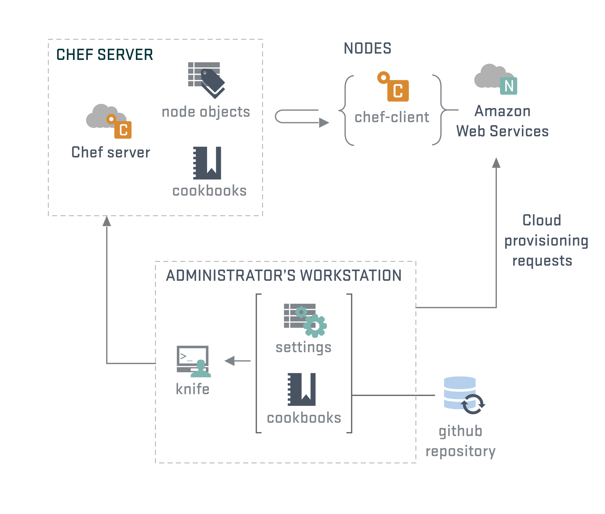
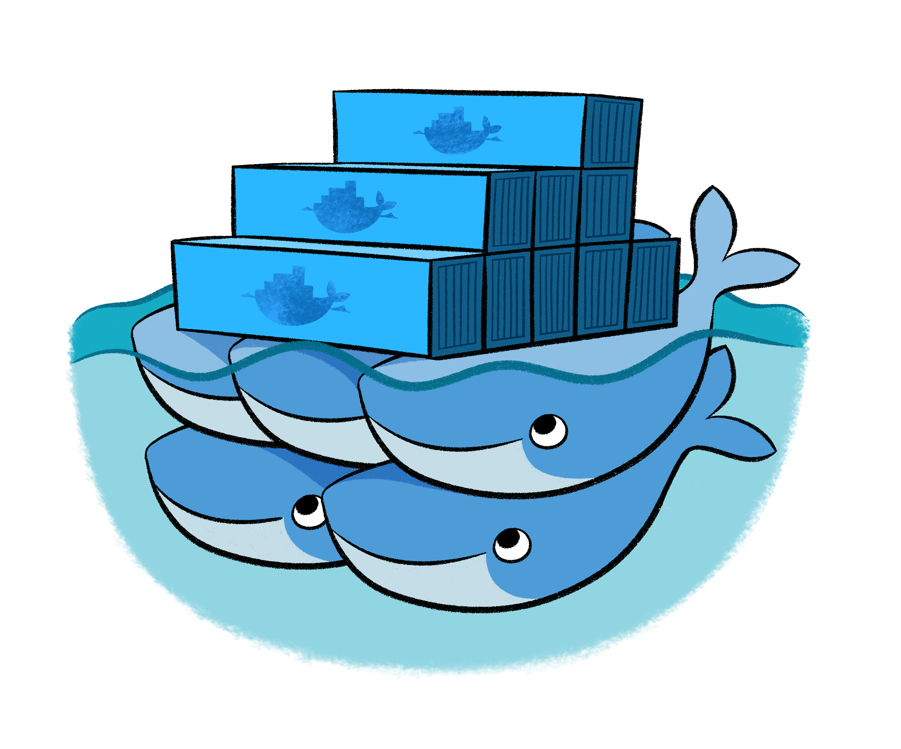

DevOps
Una breve introducción
Agenda
- Presentación
- Interacción entre infraestructura y desarrollo
- Necesidad de ambientes independientes
- Soluciones y más problemas
- DevOps
- Herramientas
Presentación
Presentación personal
- Docente en UNLP
- Trabajé en IT mayormente de 2000 a 2007
- Dicté cursos de CCNA/RedHat/Solaris/IRIX
- A partir de 2006 me aboqué al desarrollo web y coordinación de proyectos de
software
- Empecé con Devops en 2012
- Capacitación sobre chef 2013
- Trabajos freelance de IT
Contribuciones al SL
- Mi perfil en Github
- Ruby Scripting para Spoon de Pentaho (Kettle)
- chef-provisioning-vsphere
- chef-provisioning-fog
- Redmine SAML plugin
- Redmine per project sender plugin
- xmltv tv_grab_ar
- VDR - The Video Recorder Disk
- Varias recetas de chef
- Varias gemas de ruby
- Plugins para Symfony 1.x
Experiencia relevante en la temática
- Gestión de la infraestructura: email y web en SMN (2005 al 2007)
- Consultoría en SENASA (2007 a la fecha)
- Definición e implementación de un LDAP replicado e integrado con AD
- Implementación de SSO
- Arquitectura, implementación y mantenimiento del email
- Portal del diario El Día (2012 a la fecha)
- Arquitectura y desarrollo del producto
- Diseño de la arquitectura inicial de su infraestructura
Interacción entre IT y Desarrollo
Introducción
- Cada organización tiene sus particularidades, aunque en varios
lugares coincide que:
- Se conforman grupos de trabajo disjuntos para desarrollo e infraestructura
- Desarrollo es un cliente de infraestructura
- Infraestructura atiende cuestiones complejas que son críticas
- No hay diálogo fluido entre las partes
- Desarrollo aplica metodologías ágiles, mientras que infraestructura lidia con problemas en los que es difícil seguir el ritmo que solicita desarrollo
Analizaremos la problemática desde
- La perspectiva de desarrollo
- La perspectiva de infraestructura
- La puesta en producción: el momento en que desarrollo e infraestructura interactúan
La perspectiva de desarrollo
Ambientes complejos
- Las aplicaciones ya no son las tradicionales arquitecturas de tres capas
- Las herramientas a utilizar ya no sólo se conforman de un lenguaje, una base de datos SQL y un framework
- Necesidad de ambientes independientes entre los desarrolladores
- Algunas organizaciones promueven un ambiente común de desarrollo donde toda la complejidad se concentra en un cluster compartido por N desarrolladores
- Dificultad para involucrar nuevos integrantes
- Exceso de tiempo para aprender a gestionar la infraestructura en vez de programar
Gestión de proyectos
- Independientemente de la gestión de proyectos teórica y comercial hacemos hincapié en los procedimientos para trabajar
- Respetar estándares de codificación
- Utilizar alguna herramienta de versionado de código: GIT
- git-flow: trabajo con estrategias de branches y manejo de releases
- Permisos sobre las branches: desarrolladores con más experiencia revisan el código de programadores con menos experiencia. Por ejemplo: flujo tipo GitHub
Gestión de proyectos
- Relacionar los tickets/versiones del producto en producción, con los
procedimientos/flujos definidos anteriormente
- Esto mismo sugiere git-flow con los hotfix branches
- Aplicar buenas prácticas de calidad
- TDD con alta cobertura
- Tests de aceptación
- Aspiraciones para alcanzar:
- Integración continua
- Delivery continuo
- Deployment continuo
Deployments
- Poner una versión de un producto nuevo en producción puede
- Ser simple si el ambiente ya existe y no requiere nuevas dependencias
- Ser complejo si el producto a instalar requiere nuevas dependencias
- Revisar si cada una de las dependencias satisfacen sus requerimientos
- ¿El código provee de ésta información?
- Automatizar los deployments simplificando las tareas repetitivas
- Usar scripts caseros o herramientas de automatización como Capistrano, Ansible, Chef, Puppet, Salt, etc
Metodologías Ágiles
- El manifiesto ágil hace énfasis en
los siguientes valores:
- Individuos e interacciones sobre procesos y herramientas
- Software funcionando sobre documentación extensiva
- Colaboración con el cliente sobre negociación contractual
- Respuesta ante el cambio sobre seguir un plan
- Aplicando esta metodología se promueve lanzar nuevas versiones en períodos muy
cortos de tiempo:
- Aparecen deployments diarios e incluso varias veces al día
- Responder a los requerimientos ágiles requiere una operatoria ágil desde IT
- Si esto no sucede se produce un cuello de botella
TDD
- Cuando deseamos apegarnos a los requisitos de QA es bueno aplicar tests
- Los tests deben controlarse por un área de QA en cada etapa del desarrollo, estableciendo políticas de aceptación para cada etapa
TDD
- Ejemplos de políticas:
- El código no es revisado antes de mergerarse si no pasan los test de unidad, funcionales e integración. Tampoco si el analizador de código no garantiza se respetan estándares
- Un release no pasa a producción si no pasa todos los tests de unidad, funcionales e integración
- Es importante poder aplicar Integración Continua. Sin embargo, armar un ambiente de éste tipo no es trivial y depende del área de IT
Versiones de librerías y lenguajes
- Es común que los desarrolladores surfeen la cresta de las olas
- Utilizan versiones muy actuales de determinados productos que complican los ambientes
- Algunos lenguajes no permiten, de forma simple, tener en el sistema más de una versión de una misma librería o lenguaje. Por ejemplo PHP
- Esto crea diferencias entre el ambiente de desarrollo y producción
- Justamente, ésta es la brecha que debemos achicar
Gestión de versiones
- Si bien el código se maneja con versiones y GIT/SVN mantiene una identificación de cada commit, se necesita manejar un versionado de releases amigable
- Semantic Versioning contribuye a entender qué significa que un release 2.5.1 pase a la versión 2.5.2 o 2.6.0
- ¿De qué forma es posible mantener la traza del modelo de datos respecto de las versiones de código?
Acceso al ambiente de producción
- Siempre es necesario acceder a un recurso en producción
- Acceso al dump o código completo
- El código no debería ser necesario si se utilizan versiones que respetan el versionado semver o desde un SCM
- Los datos de una aplicación en producción (no la base de datos) pueden ser necesarios para realizar una prueba
- A veces, por requerimientos de seguridad o legales, la información debe obtenerse ofuscada
- Otras veces, alcanza con un dato antiguo que puede extraerse desde un backup
Replica del ambiente de producción
- Poder obtener un ambiente similar al productivo tiene un valor muy grande para
desarrollo dado que permite:
- Verificar problemas offline
- Probar nuevos releases antes de pasarlos a producción
- Al cliente verificar en una instancia previa al pasaje a producción de un cambio
- Verificar tiempos de actualización
- etc
Estadísticas y monitoreo
- Las estadísticas generalmente se utilizan por IT para conocer cómo se comporta un servidor o recurso
- Desde desarrollo hay varios aspectos que pueden medirse para luego ayudar a identificar
problemas:
- Profiling de cada middleware de una aplicación: ORM, servicios externos, renderizado, caching, tiempos de respuesta, etc
- Errores en la aplicación
- Contar con la información estadística nos permite conocer el comportamiento
normal de nuestra aplicación
- Desconocer estos datos es manejar con el parabrisas lleno de barro
Estadísticas y monitoreo
- Cuando un valor se aleja de la media o el desvío estándar por más de un tiempo aceptable, entonces podemos establecer una alerta
- Generalmente el monitoreo y las alertas se establecen sobre los servicios o
sobre los recursos que son cruciales, y ante el mínimo problema se notifica a
determinados usuarios
- Esto produce innumerables alertas que terminan siendo ignoradas
- El monitoreo debería concentrase en lo que es de valor para el usuario que utiliza el recurso y no en las partes que constituyen el servicio
La perspectiva de infraestructura
Servicios críticos
- Hoy día, servicios como el DNS o Mail se consideran funcionales per se.
- En el caso del DNS, utilizar TTL pequeños promueve la resilencia
- Las organizaciones ya utilizan virtualización como una simplificación de sus
Datacenters, gestión de la infraestructura, snapshots de VMs y migraciones en
caliente
- Algunas organizaciones desconfían de la virtualización para algunos servicios críticos para su negocio. Por ejemplo base de datos.
Servicios críticos
- Es común que la gestión de cuentas de usuarios siga siendo una tarea más del área de infraestructura
- Mantener actualizadas las versiones de cada servicio crítico evitando posibles vulnerabilidades
Atender a todas las cuestiones mencionadas demanda tiempo y esfuerzo que no dejan lugar para la investigación de nuevas tendencias, prácticas ágiles o automatización
Gestión manual de los servicios e infraestructura
- En los grupos de desarrollo, es habitual programar o automatizar cualquier paso repetible, pero no siempre aplica esto mismo en infraestructura
- Las tareas repetitivas se suelen automatizar con scripts en shell que utilizan
herramientas auxiliares: awk, perl, python, sed, php, bc, etc
- Soluciones muy acopladas que no pueden reusarse en todos los casos
El cliente más demandante: desarrollo
- El área de desarrollo es un área más a la que se le brinda servicio
- Entre los servicios ofrecidos, pueden mencionarse:
- Hosteo de aplicaciones: infraestructura deja un hueco donde desarrollo puede subir código. Se debe determinar la forma en que se dan los accesos y a qué se da acceso
- Virtualización: se ofrece un servicio de virtualización del tipo PAAS. Desarrollo gestiona su infraestructura
- Deploy de aplicaciones: Sería como el caso de hosteo de aplicaciones, pero además, es responsabilidad del área de infraestructura ejecutar el deployment en producción
El cliente más demandante: desarrollo
- Continuando con los servicios que se brinda a desarrollo:
- Gestión de ambientes: a medida que se van consolidando mejor los grupos de desarrollo e infraestructura, surge la posibilidad de aislar ambientes, como por ejemplo: pruebas, desarrollo, staging, QA, producción
- Servicios para la gestión de proyectos: es común que además de los servicios críticos, el área de infraestructura brinde servicios que permitan a los desarrolladores manejar tickets, versionado, chat, irc, integración continua, etc
Ambientes heterogéneos
- Hasta no hace mucho tiempo e incluso en la actualidad, existen organizaciones que siguen imponiendo la homogeneización de sus ambientes
- Los hechos demuestran que la homogeneización de herramientas informática fracasaron en pos de arquitecturas heterogéneas
Ambientes heterogéneos
- La heterogeneidad trae problemas al área de infraestructura
- Surgen nuevas tendencias que se convierten en requisitos para los nuevos desarrollos: Ruby, NodeJS, Erlang, Redis, Memcached, Websockets, MongoDB, Hadoop, Spark, etc
- Cómo conocer qué es lo mejor para cada caso:
- ¿Cómo monitorear?
- ¿Cómo backupear?
- ¿Es seguro?
Compromiso de la seguridad por hosting
- Cuando las aplicaciones se hostean en servidores propios sin un conocimiento claro de cómo se realizó el desarrollo se corre un alto riesgo
- Se disponen de varias herramientas que permiten resguardar la seguridad
general
- Asegurar estos ambientes complica la infraestructura
- Si el hosting es compartido en un mismo servidor, es necesario garantizar la independencia de los aplicativos
Política de backups para las aplicaciones
- Infraestructura posee políticas de backups claras para sus servicios críticos
- Cuando se deben definir para una aplicación, el área de desarrollo conoce
mejor qué backupear
- Desconociendo este dato, generalmente se utilizan snapshots o backups de toda la aplicación
- Dependiendo del esquema de trabajo empleado para obtener el desarrollo, puede
que se logre disponer de un versionado de la aplicación que garantice que el
código completo puede obtenerse tal cual la copia está en producción
- En este caso, el backup se limita a las bases de datos empleadas y los datos generados
Estadísticas y monitoreo de aplicaciones
- En infraestructura, las estadísticas y monitoreo se realiza sobre lo que es de su interés. Generalmente esto excluye las aplicaciones
- Conocer el comportamiento de una aplicación (estadística), nos permite tomar
decisiones y ver cuál es el comportamiento normal de la misma. Sin embargo,
para ello los desarrollos deben:
- Hacer buen uso y manejo de Logs
- Usar herramientas de profiling que permitan recolectar datos útiles para evaluar el comportamiento de una aplicación
Y mucho más...
- El área de infraestructura tiene que atender otras muchas cuestiones como por
ejemplo:
- Vencimientos de certificados
- Gestión de SPAM para evitar la llegada, así como el bloqueo de nuestros MTA para el envío de SPAM desde nuestros servidores
- Problemas de hardware habituales
- Pruebas de restauración de backups
- Migraciones de datos entre productos. Por ejemplo, una organización pudo haber utilizado en toda su historia, diferentes productos para su correo electrónico: uw-imap, cyrus, courier y dovecot
Puesta en producción
El momento en que desarrollo e infraestructura interactúan
Puesta en producción
- Deben definirse procedimientos para:
- Deploy de nuevas aplicaciones
- Upgrade de aplicaciones existentes
- Rollback de aplicaciones actualizadas
- Considerar la forma en que se actualizan bases de datos
Deploy de nuevas aplicaciones
- Instalar una nueva aplicación en producción es el caso ideal donde se arranca sin historia previa
- Se deben estipular una serie de pasos que deben seguirse:
- La aplicación corre con un usuario determinado
- Se debe crear una estructura de directorio previa
- Instalación de servicios que son requeridos
- Rotación de logs
- Servicios asincrónicos
- Creación de usuarios y bases de datos necesarios
- Escalado de la aplicación
- Definir y aplicar las políticas de backups
- Estadísticas y monitoreo
Upgrade de aplicación existente
- Revisar si alguno de los puntos considerados en el caso anterior varía
- Actualizar el código, preservando en lo posible la versión anterior
- Integrar de ser posible con algún esquema de proxy reverso que permita
trabajar en caliente y realizar blue green deployments
- Relación con A/B Testing
Rollback de aplicación actualizada
- Ante algún fallo inmediato detectado luego de realizar un upgrade, se desea volver atrás
- Siempre que no se haya realizado algun cambio en la base de datos destructivo que no requiera restaurar la base de datos, entonces debería ser simple realizar un rollback
- Si se preserva el código de la versión anterior, entonces con link simbólicos se puede realizar un rollback rápidamente
- Si se utiliza blue green deployments, entonces sólo se cambia el proxy reverso
Actualizaciones de las bases de datos
- El versionado del código resuelve la simplicidad de actualizar y realizar
rollbacks
- Con las bases de datos no sucede lo mismo
- Versionar la estructura de la base de datos con el código no aporta demasiado
- Necesitamos saber cómo aplicar un parche a un modelo en un momento y poder deshacerlo en caso de roolback
- Tratar que estos parches sean idempotentes
- No siempre sucede que un parche a una base de datos tenga vuelta atrás
- Algunos parches pueden ser costosos en bases de datos grandes
Otras cuestiones a considerar en la puesta en producción
- Ante un cambio de versión es aconsejable notificar a los usuarios con
anticipación de la interrupción del servicio
- Esto requiere conocer el dominio de usuarios afectados
- Programar el envío masivo de correos
- Planificar y notificar con anticipación mejoran la calidad del servicio
- Gestión de contratos
- Dependiendo de la relación comercial que exista con los clientes, el hosteo de una aplicación podrá tener un vencimiento que deberá deshabilitar el acceso hasta no regularizar la situación
Necesidad de ambientes independientes
Introducción
- No disponer de ambientes implicaría:
- Tener código versionado o no
- La única versión que es igual a producción, es la de producción
- Porque alguien cambió algo en producción que no funcionaba
- Porque luego de cambiar algo en producción, no se actualizó el código versionado
- Las pruebas se realizan en la pc del desarrollador o directamente en producción
Pareciera ser imposible que esto suceda, pero muchas organizaciones siguen gestionando sus desarrollos de esta forma
Ambientes
- Es común ver alguno de estos ambientes en una organización:
- Desarrollo: el ambiente de desarrollo es en el cuál los desarrolladores construyen el software
- Testing: es el ambiente donde se publica el software en fase de pruebas para que sea probado por un grupo definido de personas, entre las que se incluye el usuario final o representantes del mismo
Ambientes
- Pre-producción: es la instancia previa a producción, y consiste en un ambiente replicado e idéntico al productivo. En este entorno se verifica el correcto funcionamiento de la aplicación y se realizan los ajustes necesarios en caso de no ser así, evitando que los problemas se descubran en el pasaje a producción
- Producción: es el ambiente que tiene todos los servicios productivos. Este ambiente cuenta con políticas estrictas en cuanto al acceso y la administración del mismo.
Soluciones y más problemas
Introducción
En este apartado veremos qué metodologías y/o herramientas han surgido para solucionar algunas de las necesidades mencionadas según la perspectiva de desarrollo e infraestructura
Virtualización
- Existen diferentes alternativas de virtualización, que pueden ser unas mejores que otras según la licencia disponible, las necesidades o contexto de uso
- El uso de cualquier herramientas disponible para virtualizar, ofrece
mejoras substanciales para:
- Backup de VMs
- Simplifican la gestión de servidores, ahora virtuales, que cuando se realizaba físicamente
- Migraciones en caliente de VMs entre equipos físicos
- Mejor aprovechamiento de recursos de hardware
- Instalación de SO basada en templates que permite disponer rápidamente de servidores pre-instalados
Complicaciones con la virtualización
- Sin una solución de storage no es posible aprovechar muchas de las ventajas de éstas herramientas
- Generalmente la características más atractivas se proveen en versiones licenciadas
- La virtualización genera más servidores que cuando se utilizaban servidores
físicos:
- Esto se debe a que un servicio aislado es más seguro e independiente, con lo cuál su reemplazo o actualización se simplifica
- Por esta razón, crece el uso de VMs, dificultando el mantenimiento de su inventario que rápidamente se desactualiza
Un servidor que hostea múltiples aplicaciones
- Cuando varias aplicaciones comparten requerimientos, es tentador reutilizar el
mismo servidor para hostear múltiples aplicaciones
- Se simplifica la gestión del servidor
- Se compromete la seguridad de todas las aplicaciones instaladas
- Para determinar cómo compartir un mismo servidor entre aplicaciones, es conveniente realizar un análisis del que se obtenga una matriz de aplicaciones agrupadas según criticidad
Nuevas tendencias
- Surgen herramientas que requieren investigación antes de su puesta en
producción
- nginx, HA-proxy, traefik, varnish
- Montar aplicaciones en lenguajes poco usuales
- Python, Ruby, Erlang, Node
- Bases de datos NoSQL
- MongoDB, Redis
- Sistemas de colas AMQP: RabbitMQ, Qpid
Alta disponibilidad / Failover / Actualizaciones
- Los stacks de un servicio determinado se compone de partes diferentes que podemos requerir garantizar alta disponibilidad y/o failover
- Actualizar un servicio es una tarea artesanal y costosa
- Sobre todo si es un servicio distribuido con muchas dependencias
DevOps
Definición
El término DevOps tiene varias interpretaciones por ser relativamente nuevo
y ciertamente amplio
Básicamente DevOps promueve:
Objetivo
- Aplicar metodologías ágiles tanto en desarrollo como en infraestructura
- Lograr implementar flujos rápidos de trabajo planificado
- Incrementar la confiabilidad, estabilidad y seguridad de los ambientes productivos
Orígenes
- Aproximadamente en el año 2009 ante la convergencia de diferentes movimientos:
- Las conferencias Velocity, en particular la presentación "10 deploys per day - Dev & Ops cooperation at Flickr"
- Los movimientos de:
- Infrastructure as code
- Agile infrastructure
- Agile system administration
- Lean Startup
- Integración y delivery continuo
Orígenes
- La global disponibilidad de tecnologías de cloud: PaaS/IasS
- AWS EC2
- Google Compue Engine
- Microsoft Azure
- Heroku
- Digital Ocean
- BudgetVM
- Softlayer
- Rackspace
Caracterización
- DevOps es un movimiento, filosofía o práctica
- Que se ajusta perfectamente a las metodologías ágiles
- Extiende y completa el proceso de integración y deployment continuo asegurando que el código esté listo para producción agregando valor para los clientes
- Un nuevo rol profesional que surge de:
- Desarrolladores que se interesan por demás en el deploy de las aplicaciones y operaciones de red y servicios
- Administradores que son apasionados por escribir código moviendo su foco hacia desarrollo, promoviendo incluso pruebas de su infraestructura como si fuesen código
Infraestructure as code
- IaC es el proceso por el cuál se aprovisionan máquinas físicas (bare metal) o virtuales, así como sus configuraciones
- Este aprovisionamiento se realiza a través de archivos de configuración que son interpretados por alguna herramienta de gestión del aprovisionamiento
- Estos archivos de configuración de la infraestructura se versionan en un SCM
Herramientas
Existen diversos productos que promueven IaC
| |
Chef |
| |
Puppet Labs |
| |
Ansible |
| |
SaltStack |
Test de la infraestructura
- Con las herramientas anteriores es posible realizar tests de la
infraestructura:
- Tests de unidad:
- Tests de integración
Conceptos relacionados
- A continuación describiremos brevemente los siguientes conceptos:
- Integración Continua
- Delivery Continuo
- Deployment Continuo
Integración Continua
- Para comprender bien este concepto, tenemos que considerar el trabajo diario de un equipo de desarrolladores
- Cada desarrollador trabaja en una rama determinada en el SCM
- Si varios desarrolladores trabajan sobre una rama diferente, se ramifican las versiones produciéndose un problema a la hora de integrar ramas: Merge hell
Proyecto con varias ramas

¿Cómo es posible garantizar un merge satisfactorio en todos los casos?
Integración continua
- Promueve el frecuente merge con la rama principal
- Tratando así de minimizar el re-trabajo
- Se realizan múltiples merge diarios donde cada desarrollador se compromete a
seguir un flujo de trabajo completo donde se debe correr y pasar todos los
tests de unidad e integración
- Esto se automatiza con herramientas de CI que escuchan cada commit en el SCM
Herramientas de CI
Delivery y deployment continuo
- Generalmente se confunden delivery y deployment continuo
- Deployment continuo admite que cada cambio sea aplicado en producción
- Delivery continuo permitiría que cada cambio se prepare para estar disponible para producción, pero el paso de ponerlo en producción requiere de intervención humana
Herramientas
Introducción
En este apartado veremos ejemplos de algunas herramientas que promueven la práctica DevOps, pero más importante aún, que simplifican tareas repetitivas y promueven el desempeño ágil de nuestra tarea
- Presentaremos entonces, herramientas que sirven:
- Desde la perspectiva de desarrollo
- Desde la perspectiva de infraestructura
Desde la perspectiva de desarrollo
Desde la perspectiva de desarrollo
- Si bien cada proyecto es un mundo diferente, trataremos de dar ejemplos que se
dan en gran parte de los proyectos de desarrollo
- El primero considera el deploy automatizado
- Luego hablaremos de cómo simplificar el desarrollo en ambientes complejos:
- Usando Vagrant
- Usando Docker
- A su vez, trataremos de ir introduciendo el concepto de inmutabilidad
Automatizando los deploys
Automatizando los deploys
- Esta tarea tiene como objetivo automatizar la tarea de instalar/actualizar una
aplicación en un servidor remoto teniendo en cuenta todas las consideraciones
necesarias
- Incluso cuando la aplicación se compone de varias componentes distribuidas
- No todos los desarrollos tienen las mismas necesidades
- Realizar un build
- Publicar artefacto
- Instalar dependencias
- Subir/Descargar código/artefacto
- Correr scripts
Un ejemplo: Capistrano
A remote server automation and deployment tool written in Ruby
role :demo, %w{srv-01 srv-02 srv-03}
task :uptime do
on roles(:demo), in: :parallel do |host|
uptime = capture(:uptime)
puts "#{host.hostname} reports: #{uptime}"
end
end
Uso de capistrano
cap install # Inicializa el directorio
cap -T # Lista todas las posibles tareas disponibles
- Instaura la noción de ambientes
- Por defecto inicializa dos ambientes: production y staging
- Los ambientes configuran los accesos
- Las tareas son las mismas para cada ambiente
Ejemplo de production.rb
role :demo, %w{localhost}
server '33.33.33.10',
roles: %w(demo),
ssh_options: {
user: 'vagrant',
forward_agent: true,
auth_methods: %w(publickey password),
password: 'vagrant'
}
Uso de capistrano
- Además de los ambientes, capistrano define roles. Por ejemplo: web, app, db
- Un servidor tiene un rol
- En un server con un determinado rol, hay que realizar determinadas taras diferentes. Por ejemplo: assets en web, deploy en app, dump en db
- Además de las tareas predefinidas, permite extenderlo con tareas propias sean locales como remotas
- Las tareas predefinidas permiten realizar deploy y rollback
Veremos ejemplos de uso de capistrano deployando en un servidor virtual con IP 33.33.33.10
Ejemplo de capistrano y jekyll
-
Jekyll es uno de los tantos generadores de sitios
estáticos
- El website de Mikroways fue desarrollado con jekyll
- Deployaremos en la VM el sitio usando jekyll. Para ello:
- El servidor debe tener instalado ruby
- Se debe desacargar el código del sitio desde GitHub
- Se debe correr el comando
jekyll build - Listo!
- Para probarlo: http://33.33.33.10
Ejemplo de capistrano y jekyll
- Con capistrano:
- Deployamos el sitio:
cap production deploy -
Remotamente ejecutamos
jekyll build - Localmente abrimos el navegador con al URL del sitio
- Deployamos el sitio:
- Probamos una nueva versión del sitio
- Hacemos un rollback:
cap production deploy:rollback
Capistrano y desarrollos dinámicos
- En sitios que no son estáticos, existen archivos que deben mantenerse entre
deploys
- Configuración de la base de datos o software
- Uploads o archivos generados por la aplicación
- Capistrano permite definir qué archivos y qué directorios son compartidos
- De aquí la estructura propuesta por capistrano es:
base_dir
├── current -> /opt/sites/jekyll/releases/20160619173257
├── releases
│ └── YYYYMMDDHHmmii
├── repo
└── shared
Capistrano y wordpress
- Creamos un wordpress que mantenemos localmente
- Personalizamos el wordpress local
- Instalamos wordpress con capitrano en el servidor remoto
- Será accesible vía http://33.33.33.10:81
- Usamos tareas personalizadas para:
- Subir la base local a producción
- Subir el template y uploads a producción
- Trabajamos en producción
- Descargamos la base de producción a nuestra copia local
Otras Herramientas
Vagrant
Vagrant
- Simplifica la configuración, reproducibilidad y portabilidad de ambientes sobre diferentes estándares industriales
- Controla estos ambientes mediante un simple workflow que maximiza la productividad y flexibilidad
- Aisla las dependencias y sus configuraciones en un ambiente consistente y descartable
- Disponible para:
- Mac OS X
- Windows
- Linux
Vagrant providers
- Virtualbox
- Hyper-V
- VMWare
- AWS
- Docker
Vagrant provisioners
- File
- Shell
- Ansible
- CFEngine
- Chef
- Puppet
- Docker
- Salt
Comandos Vagrant
vagrant up
vagrant destroy
vagrant ssh
vagrant provision
vagrant reload [--provision]
vagrant box list
Multimachine
Esta funcionalidad permite iniciar varias VMs en un mismo Vagrantfile
permitiendo así simular ambientes complejos
Ejemplos vagrant
shell provisioning
Vagrant.configure(2) do |config|
config.vm.box = "chef/ubuntu-14.04"
config.vm.box_check_update = false
config.vm.network "private_network", ip: "33.33.34.10"
config.vm.provision "shell", inline: <<-SHELL
sudo apt-get update
sudo apt-get install -y apache2
SHELL
end
Ejemplos vagrant
Multimachine (4 vms) con docker y shell provisioning
Vagrant.configure(2) do |config|
config.vm.define 'master', primary: true do |app|
app.vm.box = "chef/ubuntu-14.04"
app.vm.network "private_network", ip: "33.33.35.10"
app.vm.provision "docker" do |d|
...
end
end
(1..3).each do |num|
config.vm.define "node-#{num}" do |app|
app.vm.box = "chef/ubuntu-14.04"
app.vm.network "private_network", ip: "33.33.35.1#{num}"
app.vm.provision "docker" do |d|
...
end
end
end
Ejemplos vagrant
AWS provider con Chef
Antes de poder utilizar este provider es necesario instalar el plugin que provee esta funcionalidad
vagrant plugin install vagrant-aws
# Se usa un box dummy
vagrant box add dummy \
https://github.com/mitchellh/vagrant-aws/raw/master/dummy.box
vagrant up --provider=aws
Ejemplo vagrant y AWS
Vagrant.configure("2") do |config|
config.vm.box = "dummy"
config.vm.provider :aws do |aws,override|
aws.ami = "ami-7747d01e"
aws.access_key_id = ENV['AWS_ACCESS_KEY']
aws.secret_access_key = ENV['AWS_SECRET_KEY']
aws.keypair_name = 'car'
override.ssh.username = "ubuntu"
override.ssh.private_key_path = "#{ENV['HOME']}/.ssh/id_rsa"
end
config.vm.provision :chef_solo do |chef|
chef.run_list = [
'recipe[apt]',
'recipe[my_rancher]'
]
end
end
vagrant rsync - Requiere este comando si algo se modifica -
Ejemplo de servidor Rancher
Docker

Docker
- Permite correr contenedores linux aislados sólo en Linux
- Promueve la portabilidad, permitiendo contenedores autosuficientes que son creados a partir de las necesidades de una aplicación
- Basados en el concepto de inmutabilidad
- Los contenedores usados en desarrollo pueden usarse en ambientes de testing y
producción
- Minimiza la brecha entre desarrollo e infraestructura
- Puede utilizarse para aplicaciones gráficas
docker run -v ~/workspace/:/home/eclipse/workspace/ \
-e DISPLAY -v /tmp/.X11-unix:/tmp/.X11-unix:ro \
-d leesah/eclipse
Conceptos Docker
- Docker funciona a partir de:
- Docker engine: set de herramientas de gestión del ambiente docker: servicio docker, contenedores, imagenes
- Docker hub/registry: repositorio de imágenes públicas o privadas a partir de donde creamos contenedores
Comandos docker
docker search
docker images
docker pull
docker run
docker ps
docker diff
docker commit
docker inspect
docker log
Ejemplo
Iniciamos una instancia de Mysql con docker
docker run -p 33060:3306 -e MYSQL_ROOT_PASSWORD=devops -d mysql:5.7
mysql -u root -h 127.0.0.1 --port 33060 -pdevops
¿Qué sucede si eliminamos el contenedor?
Volumenes en docker
docker volume ls
docker volume create
docker volume rm
docker volume inspect
Docker compose
Se describe una aplicación compuesta por más de un contenedor mediante un yml
version: "2"
services:
wordpress:
image: wordpress
links:
- db:mysql
ports:
- 8080:80
db:
image: mysql:5.7
Comandos docker compose
docker-compose up
docker-compose ps
docker-compose stop
docker-compose rm
docker-compose scale
Desde la perspectiva de infraestructura
Desde la perspectiva de infraestructura
- Se intenta capturar una configuración funcional que permita:
- Replicar un ambiente
- Recuperación ante desastres
- Surge la posibilidad de versionar la infraestructura
- Esto implica poder repetir la instalación de un server
- Surgen nuevas necesidades:
- Orden en cuanto al inicio de servicios
- Cambios de plataformas de virtualización por costos o funcionalidad
Herramientas
- Gestión de las configuraciones usando Chef
- Gestión de la infraestrcutura usando chef-provisioning
- Docker en producción con Rancher
Chef
- Chef permite modelar la evolución de nuestra infraestructura y aplicaciones como si fueran código
- No impone restricciones
- Permite describir y automatizar los procesos e infraestructura
- La consecuencia es que la infraestructura se vuelve:
- Versionable
- Testeable
- Replicable
- Idempotente
Conceptos de chef
- Para lograr su objetivo se utilizan definiciones reutilizables llamadas cookbooks y recipes
- Se programa en Ruby usando una DSL
Arquitectura

Entidades de chef
- Roles
- Nodos
- Atributos
- Data Bags
Además, es posible realizar búsquedas sobre estas entidades
Ejemplo de una receta
package 'nginx'
service 'nginx' do
action [:enable, :start]
end
template '/etc/nginx/sites-enabled/www.conf' do
source 'nginx-default.conf.erb'
variables(
server_name: 'www.mikroways.net',
document_root: '/var/www'
)
notifies :restart, 'service[nginx]', :immediately
end
Ver ejemplo completo
Es posible probar las recetas con una versión de chef llamada
chef-zero/chef-solo
TDD
- Ejemplo de test de unidad
- Basados en ChefSpec
rspecrubocopfoodcritic
- Ejemplo de test de
integración
- Basados en Test Kitchen
- Probamos un test implementado con ServerSpec en plataformas Debian 7 y Ubuntu 14.04
kitchen
Desplegando el potencial de chef
- Bootstrap de nodos
- Usaremos knife-ec2
- Búsquedas
- Ambientes
- ssh en paralelo
- Búsquedas en recetas
- Ejemplo con ha-proxy
Bootstrap de nodos
- Usaremos Amazon EC2 y un plugin de chef que simplifica y unifica las tareas de crear y bootstrapear un nodo
- Crearemos antes un rol que describe un web server. Esto nos permitirá realizar búsquedas
# Crea/actualiza el rol web-server
knife role from file roles/web-server.rb
# Crea dos nodos llamados web-01 y web-02 en amazon con el rol
# web-server
knife ec2 server create -I ami-b1a652d1 -f m1.small --ssh-user ubuntu \
-N web-01 -r 'role[web-server]'
knife ec2 server create -I ami-b1a652d1 -f m1.small --ssh-user ubuntu \
-N web-02 -r 'role[web-server]'
## Listamos las instancias de Amazon EC2
knife ec2 server list
Algunos detalles que se omiten se toman de la configuración de knife
Un poco de knife
knife status
knife role list
knife node list
knife search '*:*'
knife search 'platform:ubuntu AND (name:web-01 OR role:web-server)'
knife ssh -x ubuntu 'role:web-server' sudo service nginx stop
knife exec -E 'search(:node, "role:web-server").each do |node|
puts(
node.name => {
ip: node.cloud.public_ipv4,
mem: node.memory.total,
cpu: node.cpu.total
}
)
end'
Lo interesante es que uno puede usar búsquedas en las recetas
Creamos un proxy reverso
Esta receta utiliza búsquedas para configurar los backends de haproxy
all_web_servers = search(:node, "role:web-server")
members = []
all_web_servers.each do |web|
members <<
{
"hostname" => web['cloud']['public_hostname'],
"ipaddress" => web['cloud']['public_ipv4'],
"port" => 80,
"ssl_port" => 80
}
end
node.default['haproxy']['members'] = members
include_recipe 'haproxy'
knife ec2 server create -I ami-b1a652d1 -f m1.small --ssh-user ubuntu \
-N proxy -r 'recipe[myhaproxy]'
Probar con curl y eliminar con
knife ec2 server delete <INSTANCE-ID> -P
Chef no es el único
- Y... ¿por qué chef?
- Hoy día Ansible es la alternativa más elegida
- Puppet es la principal competencia
chef-provisioning
Introducción
- Chef provisioning extiende chef permitiendo crear VMs en diferentes plataformas
de virtualización
- Vagrant
- AWS
- Azure
- DigitalOcean
- VMWare
- XenServer
- Google Compute Engine
- IBM SoftLayer
- Y varios más
¿Qué es entonces?
- Permite configurar nuestro cluster de máquinas de forma agnóstica de la plataforma
- Evita el uso reiterativo de knife para iniciar VMs
Ejemplo
chef_role 'web-server' do
run_list ["recipe[apt]","recipe[web-server]"]
end
machine_batch do
machine 'web-01' do
run_list ['role[web-server]']
end
machine 'web-02' do
run_list ['role[web-server]']
end
end
machine 'proxy' do
run_list ['recipe[myhaproxy]']
end
Corremos en nuestra PC
chef-client -z -r 'my-infra::chef,my-infra::aws,my-infra'
Eliminando todo
chef_role 'web-server' do
action :delete
end
machine_batch do
action :destroy
machines 'web-01', 'web-02', 'proxy'
end
Corremos en nuestra PC
chef-client -z -r 'my-infra::chef,my-infra::aws,my-infra::delete'
Y ahora con Vagrant
chef-client -z -r 'my-infra::chef,my-infra::vagrant,my-infra'
Esto es muy importante, porque sólo cambiando el driver de aprovisionamiento, podemos reusar nuestra infraestructura definida
Podemos incluso tener un cluster con VMs de diferentes proveedores
Terraform

La alternativa a chef-provisioning
Clusters de contenedores

Alternativas en boga
Además se habla mucho de
Características
- Schedulling de contenedores
- Importancia de los labels en docker
- Service discovery
- Zookeper
- Consul
- Etcd
- Complicaciones:
- Volúmenes compartidos
- Monitoreo y Logs
Rancher
Rancher
- Permite configurar ambientes
- Con Cattle, Swarm, Kubernetes y ahora Mesos
- Los ambientes se componen de nodos
- Los contenedores se manejan con stacks
- Usan docker-compose v1
- Provee un catálogo de aplicaciones
- Permite extender el catálogo con uno propio
- Simplifica la integración con registries privadas
- Proxy reverso basado en service discovery
- Simple escalamiento de contenedores
Ejemplo
- Deployamos un wordpress desde el catálogo
- Fijamos que sólo corra la db en un nodo determinado
- Escalamos el servicio
Otro ejemplo
- Creamos una aplicacion propia
- El nombre del directorio es importante: nombre del stack
- Creamos
docker-compose.yml - Iniciamos el stack:
rancher-compose up - Verificamos
- Upgradeamos:
rancher-compose up -u my-app - Verificamos
- Realizamos un rollback
¿Preguntas?
Gracias
totales
Contacto
contacto@mikroways.net
christian.rodriguez@mikroways.net
@car_unlp